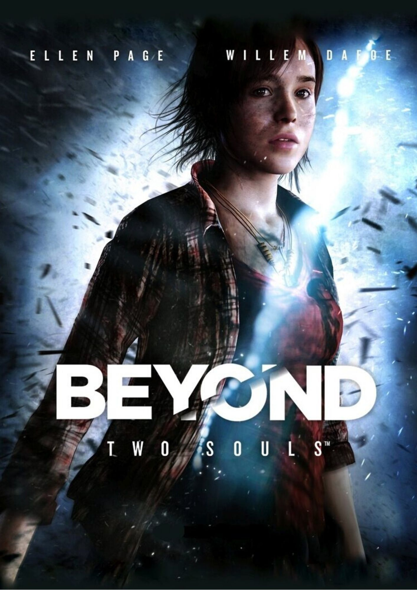

Beyond: Two Souls es un videojuego de drama interactivo, desarrollado por Quantic Dream y distribuido por Sony Computer Entertainment exclusivamente para PlayStation 3 y remasterizado después para PlayStation 4 y Microsoft Windows. Con un coste de desarrollo de 27 millones de US$1 Está protagonizada por el actor Elliot Page y el actor Willem Dafoe, y fue lanzado el 8 de octubre de 2013 en América del Norte, el 9 de octubre en Australia, el 11 de octubre en Europa y el 17 de octubre en Japón.
